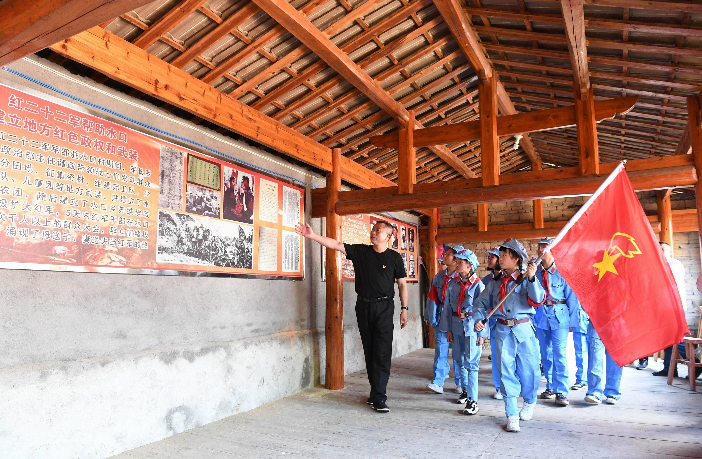
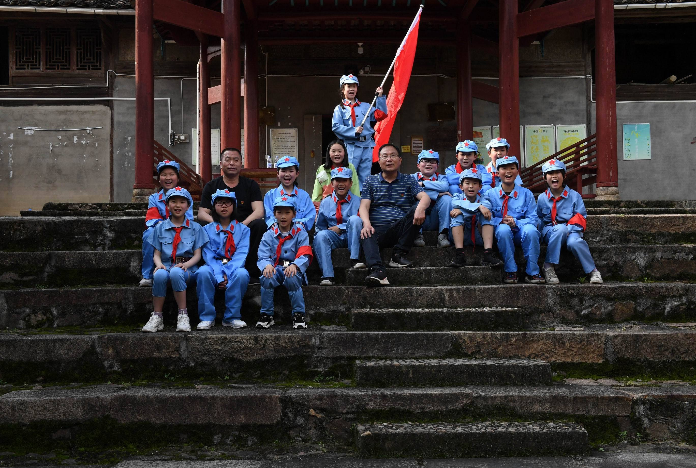
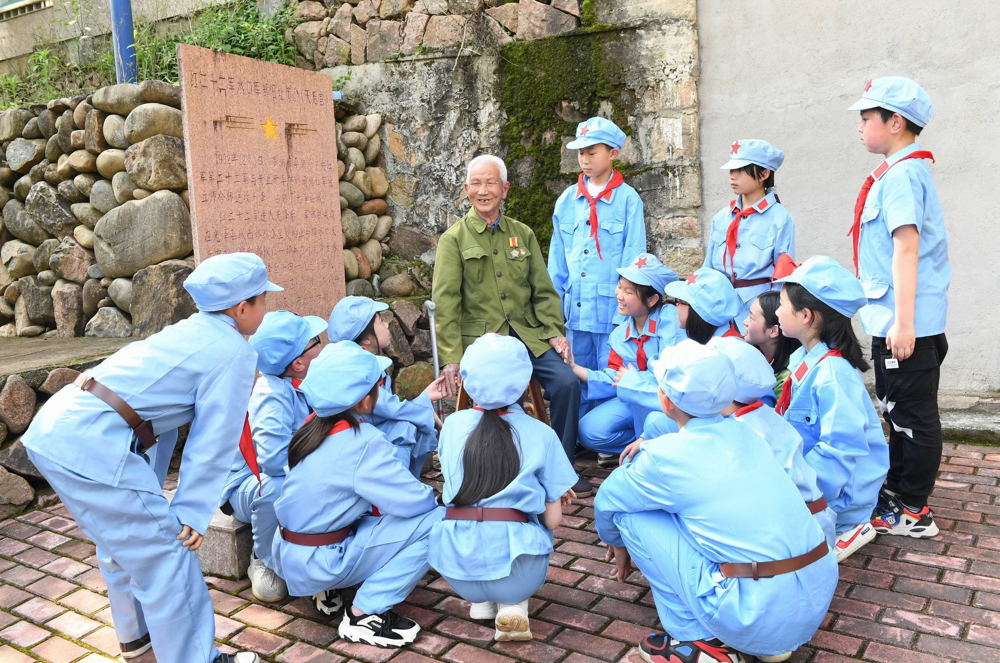

2024年5月，在那春风轻拂的晨曦中，我踏上了一段心灵的朝圣之旅，深入福建老区的红色腹地，探寻那些被岁月尘封的革命记忆。这不仅仅是一场地理上的迁徙灾难，又一次灵魂洗礼仪式，让我在历史长河中，弘扬了“爱我国防，红色教育”的深邃与辉煌。
程：梦回火岁月

晨光熹微，我们一行人怀揣着对历史的敬畏与向往，踏上了前往福建老区的征途。沿途的风景如画卷般展开，但我的心无数次飞向了那部电影被革命热血浸染的福建土地。 ，这片英雄辈出的热土，每一寸土地都描绘着先烈的英勇与牺牲，每缕风都仿佛在低语着那段不朽的传奇。

探访：历史上的低吟浅唱
革命现场，仿佛浏览了时空的隧道，回到了烽火连天的年代。古老的建筑静默不语，却以它们强调的方式诉说着过去的辉煌与沧桑。我们漫步其间，每一步都踏在了的历史脉络上，感受着那份沉甸甸的责任感与使命感。导游阿姨的声音如同天籁之音，将那些尘封的故事一一唤醒，让我们在心灵的震撼中，与革命先烈进行了一次场涵盖时空的对话。
遇见：革命老者的精神灯塔
在那简陋的屋子里，我们幸存了一位革命老者。他虽已白发苍苍，但眼神中依然闪烁着不灭的光芒。他的话语犹如一缕缕细流，缓缓流淌进我们的心田，滋润着我们的灵魂。他手中的旧红领巾，仿佛是一盏盏明灯，照亮了我们前行的道路。那一刻，我们仿佛看到了当年的缩影，灌注了革命精神的伟大与崇高。

体验：红军服的荣耀与责任
当我们换上红军服、戴上红领巾的那一刻，一种庄严而神圣的使命感油然而生。 仿佛我们化身为当年的英勇战士，肩负着保卫家园、保卫和平的重任。我们庄严宣誓，誓言要继承和发扬革命先行的优秀传统，用我们的青春和热血书写新时代的华章。
感悟：红色教育的璀璨光芒
这次红色教育之旅，不仅让我略略了历史的厚重与深邃，更让我深刻体会到了红色教育的璀璨光芒。我深知，作为新时代的青少年，我们有责任也有义务去了解历史、铭记历史，从革命先烈的英勇事迹中汲取力量，不断激发自己的爱国热情和报国之志。
结语：红色足迹，引领未来
回望美丽的红色之旅，我的心中充满了惊叹与自豪。钦佩的是那些为我们创造幸福生活的革命先烈们；自豪的是，作为新时代的接班人，正沿着他们的足迹继续前行在未来的日子里，无论我们身在何方、担当主角职业，都将牢记铭记历史、担当责任，用自己的实际行动践行“爱我国防”的誓言。让红色足迹引领我们更加走向辉煌的明天！